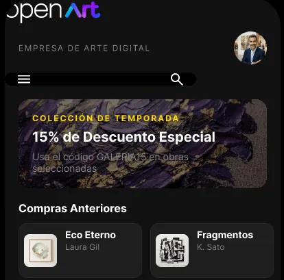

Pablo Ezequiel Schlotthauer
Profesor de Matemática & Estudiante de Lic. en Sistemas de Información (UADER).
Enfocado en el desarrollo web claro, funcional y accesible.
2+
Años en Sistemas (UADER)
7+
Años Docente Titular
3+
Proyectos Web Integrales
4+
Cursos de Formación IT
SKILLS & TECNOLOGÍAS
PROYECTOS
EXPERIENCIA
Estudiante de Lic. en Sistemas de Información
2025 - PresenteCursando materias de 2.º año: Ingeniería de Software, Algoritmos y Estructuras de Datos, Diseño UX/UI y Arquitectura de Computadoras.
Profesor de Matemática
2017 - PresenteDocente en nivel secundario técnico, dictando clases en EET Nº1 "Ana Urquiza de Victorica" (Concepción del Uruguay, Entre Ríos).
Formación en Desarrollo Web & Programación
Capacitación continua en desarrollo web y programación: Argentina Programa, Codo a Codo, Educación IT e Inove Code.
SOBRE MÍ
Soy docente de matemática y apasionado por la tecnología. Mi formación pedagógica combinada con el cursado de la Licenciatura en Sistemas me permite abordar el diseño y desarrollo de software con rigor lógico, empatía con el usuario y alta claridad estructural.
1
Rigor y Estructura
Aplicación de principios lógicos para estructurar código semántico y componentes limpios.
2
Diseño Centrado en el Usuario
Prioridad en la accesibilidad, usabilidad y navegación fluida para todo tipo de personas.
3
Aprendizaje Continuo
Evolución técnica constante adaptando nuevas herramientas y buenas prácticas de desarrollo.
Contacto
¿Tenés algún proyecto en mente o querés conectar? Podés escribirme directamente a mi correo electrónico.
pabloschlo@gmail.com